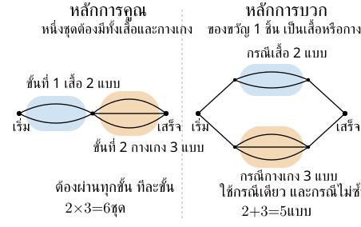
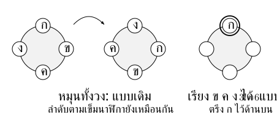

. ก่อนนับ ต้องรู้ว่าอะไรถือเป็นหนึ่งแบบ
หลักการนับหาจำนวนผลลัพธ์โดยไม่แจงทุกแบบ ก่อนคำนวณตอบสามเรื่อง:
- กำลังสร้างอะไร เช่น รหัส จำนวนเต็ม แถวคน หรือกลุ่มคน
- ใช้สิ่งเดิมซ้ำได้หรือไม่ และมีตำแหน่งใดถูกจำกัด
- ถ้าสลับลำดับ หมุน หรือเปลี่ยนตำแหน่ง ยังถือว่าเป็นแบบเดิมหรือไม่
เช่น คนสองคนสลับหน้าที่หัวหน้ากับรอง จะได้การมอบหน้าที่คนละแบบ แต่ถ้าเลือกเป็นทีมสองคน ทีมเดิมยังเป็นทีมเดิมแม้เขียนชื่อสลับกัน
. หลักการคูณกับหลักการบวก
หลักการคูณ: ถ้าทำงานให้เสร็จต้องผ่านหลายขั้น และสำหรับทุกทางเลือกในขั้นก่อนหน้า ขั้นถัดไปมีจำนวนทางเลือกตามที่กำหนด ให้นำจำนวนทางเลือกแต่ละขั้นมาคูณกัน
เช่น เลือกเสื้อ แบบ แล้วเลือกกางเกง แบบ โดยจับคู่ได้ทุกแบบ จะได้ ชุด แต่ละชุดต้องมีทั้งเสื้อและกางเกง
ห้ามใช้ซ้ำ → จำนวนตัวเลือกขั้นต่อไปลดลงได้ คูณจำนวนที่เหลือให้ถูก ไม่จำเป็นต้องเท่ากันทุกขั้น
หลักการบวก: ถ้างานสำเร็จได้ด้วยกรณีใดกรณีหนึ่ง และกรณีเหล่านั้นไม่ซ้ำกัน ให้นับแต่ละกรณีแล้วบวก
ของขวัญ ชิ้น เลือกจากเสื้อ แบบหรือกางเกง แบบ กรณีไม่ซ้ำ จึง แบบ ต่างจากชุดแต่งตัวที่ต้องใช้ทั้งสองชิ้น

ถ้ากรณีทับกัน การบวกตรง ๆ จะนับบางผลลัพธ์ซ้ำ ต้องแยกกรณีใหม่ให้ไม่ทับกัน หรือหักส่วนที่นับซ้ำออก เช่น เมื่อ เป็นเซตจำกัด
ขั้นต่อไปมีตัวเลือกต่างกันตามทางก่อนหน้า → แยกกรณี → คูณภายใน → บวกแต่ละกรณี
ระวัง: อย่าตัดสินจากคำว่า “และ” หรือ “หรือ” เพียงคำเดียว ให้ดูว่าผลลัพธ์หนึ่งแบบต้องผ่านกี่ขั้น และแต่ละกรณีซ้ำกันหรือไม่
. แฟกทอเรียลและการเรียงของต่างกัน
บทนิยาม: สำหรับจำนวนเต็มบวก ให้ และกำหนด
การเรียงของต่างกัน ชิ้นเป็นแถว ใช้ครบทุกชิ้น จะได้ แบบ เพราะตำแหน่งแรกเลือกได้ ทาง แล้วเหลือ ทาง ลดลงไปจนเหลือ ทาง
ถ้าเลือกของต่างกัน ชิ้นมาเรียงเพียง ตำแหน่งโดยไม่ซ้ำ เมื่อ เป็นจำนวนเต็มและ จะได้
สำหรับ นี่คือ ; กรณี มีการไม่เลือกอะไรอยู่หนึ่งแบบ
ถ้าแต่ละตำแหน่งเลือกจากของ ชนิดได้อย่างอิสระและใช้ซ้ำได้ โดย เป็นจำนวนเต็มบวกและ เป็นจำนวนเต็มไม่ลบ จะมี แบบ แทนการลดจำนวนตัวเลือกลงทุกขั้น
ระวัง: สูตร และ ใช้กับของต่างกันและไม่ซ้ำ หากมีข้อจำกัดตำแหน่ง ต้องจัดการข้อจำกัดก่อน ไม่ใส่สูตรทันที
. การเรียงของที่มีของเหมือนกัน
ถ้ามีของรวม ชิ้น แบ่งเป็นชนิดที่เหมือนกันภายในชนิด จำนวน ชิ้น โดย การเรียงเป็นแถวใช้ครบทุกชิ้นมี
แบบ
นับเหมือนทุกชิ้นต่างกัน แต่สลับชนิดเดียวกันไม่เกิดแบบใหม่ จึงหารจำนวนที่นับซ้ำ
เช่น เรียงได้ แบบ คือ , ,
ระวัง: ของจะเหมือนกันหรือไม่ขึ้นกับโจทย์ คนที่ใส่เสื้อสีเดียวกันยังเป็นคนต่างกัน ไม่หารแฟกทอเรียลเพียงเพราะสีเหมือนกัน
. การเรียงรอบวง
เมื่อเรียงของต่างกัน ชิ้นรอบวง โดย และการหมุนทั้งวงถือเป็นแบบเดิม แต่ภาพสะท้อนยังถือเป็นคนละแบบ จะมี แบบ
ตรึงหนึ่งชิ้นเป็นจุดอ้างอิง แล้วเรียงอีก ชิ้น เพราะการหมุนทั้งวงไม่ได้เปลี่ยนว่าใครอยู่ข้างใคร
เช่น คนต่างกัน คนรอบโต๊ะ เมื่อหมุนทั้งวงถือเป็นแบบเดิม ตรึงหนึ่งคนแล้วเรียงอีกสามคนได้ แบบ

ระวัง: ถ้าเก้าอี้มีหมายเลขกำกับและตำแหน่งที่นั่งถือว่าต่างกัน จะนับเหมือนตำแหน่งต่างกัน ตำแหน่ง จึงได้ สำหรับคนต่างกัน คน ไม่ใช้ และไม่หาร เพิ่มถ้าโจทย์ไม่ได้ถือว่าภาพสะท้อนเหมือนกัน
. การเลือกแบบไม่สนลำดับ
ถ้าเลือกของต่างกัน ชิ้นมา ชิ้น โดยไม่ซ้ำและไม่สนลำดับ เมื่อ เป็นจำนวนเต็มและ จะมี
แบบ
เขียนเป็นตัวจัดหมู่แบบคอลัมน์ได้ ความหมายเดียวกัน:
การเลือกชุดเดียวกันถูก นับซ้ำ ครั้งจากการเรียงของที่เลือก จึงหาร ออก และมี เพราะเลือกของที่เอากับเลือกของที่เหลือให้ข้อมูลชุดเดียวกัน
เช่น จากนักเรียน คน เลือกหัวหน้ากับรองโดยห้ามเป็นคนเดียวกัน มี แบบ แต่เลือกทีมสองคนมี ทีม
เกณฑ์เลือกวิธี: ลองสลับของที่เลือก ถ้าคำตอบเปลี่ยน เช่น สลับหน้าที่หรือตำแหน่ง ให้คิดแบบเรียง; ถ้าผลลัพธ์เดิม เช่น สมาชิกทีมเดิม ให้คิดแบบเลือกไม่สนลำดับ
ระวัง: คำว่า “เลือก” อาจตามด้วยการมอบหน้าที่ จึงไม่ได้แปลว่าต้องใช้ เสมอ
. เครื่องมือเมื่อมีเงื่อนไข
| เงื่อนไข | วิธีเริ่ม | สิ่งที่ต้องตรวจ |
|---|---|---|
| บางตำแหน่งจำกัดตัวเลือก | นับตำแหน่งนั้นก่อน แล้วเติมที่เหลือ | ตัวเลือกที่ใช้ไปแล้วและข้อห้ามตำแหน่งอื่น |
| ของที่กำหนดต้องอยู่ติดกัน | รวมเป็นหนึ่งกลุ่ม เรียงกลุ่มกับของที่เหลือ แล้วเรียงภายในกลุ่ม | แต่ละผลลัพธ์ต้องเกิดจากการแบ่งกลุ่มเพียงวิธีเดียว |
| ของสองชิ้นห้ามติดกัน | นับทั้งหมดลบกรณีสองชิ้นติดกัน หรือเรียงของอื่นแล้วเลือกช่องแทรก | นิยามช่องหัวท้ายและห้ามใส่หลายชิ้นในช่องเดียวถ้าต้องแยกกัน |
| ต้องมีอย่างน้อยหนึ่ง | นับทั้งหมดลบกรณีไม่มีเลย | กรณีที่ลบต้องเป็นส่วนเติมเต็มตรงเงื่อนไข |
| มีจำนวนที่กำหนดแน่นอน | เลือกตำแหน่งของสิ่งนั้น แล้วเติมที่เหลือ | ห้ามให้ตำแหน่งที่เหลือสร้างสิ่งนั้นเพิ่ม |
แบ่งกรณีต้อง ครอบคลุมทั้งหมดและไม่ทับกัน
. แนวที่เลือกฝึก: รหัสที่มีเลขบังคับ
ก่อนเติมรหัส ให้แยก รหัส ออกจาก จำนวนหลายหลัก รหัสอาจเริ่มด้วย ได้ตามโจทย์ แต่จำนวนสามหลักเริ่มด้วย ไม่ได้ จากนั้นตรวจว่าเลขซ้ำได้หรือไม่ และต้องมีเลขที่บังคับกี่ครั้ง
ไม่ซ้ำและบังคับเลขหนึ่งตัว → เลือกตำแหน่งเลขนั้นก่อน → เติมที่เหลือ ไม่ต้องตามว่าเลขบังคับเกิดขั้นใด
ตัวอย่าง รหัส ตำแหน่งใช้เลข ไม่ซ้ำ ต้องมี และอนุญาตให้เริ่มด้วย :
- เลือกตำแหน่งของ ได้ ทาง
- เติมสองตำแหน่งที่เหลือด้วยเลข ได้ ทาง แล้วเหลือ ทาง
- รวม รหัส
ถ้าเปลี่ยนเป็น จำนวนสามหลัก ที่ต้องมี และไม่ซ้ำ เลข อยู่ได้เฉพาะหลักสิบหรือหลักหน่วย จึงเหลือ จำนวน
หากอนุญาตให้เลขซ้ำและต้องมี อย่างน้อยหนึ่งตัว วิธีเลือกตำแหน่งของ หนึ่งตำแหน่งแล้วเติมทุกเลขจะนับรหัสที่มี หลายตัวซ้ำ ให้ใช้ส่วนเติมเต็มแทน เช่น รหัส ตำแหน่งจากเลข ที่ซ้ำได้และเริ่ม ได้ มีทั้งหมด รหัส และไม่มี เลย รหัส จึงมี อย่างน้อยหนึ่งตัว รหัส
ระวัง: “มีหนึ่งตัวพอดี” ต่างจาก “มีอย่างน้อยหนึ่งตัว” และการเลือกตำแหน่งที่จำกัดก่อนทำได้เมื่อยังตามข้อจำกัดของตำแหน่งอื่นครบ